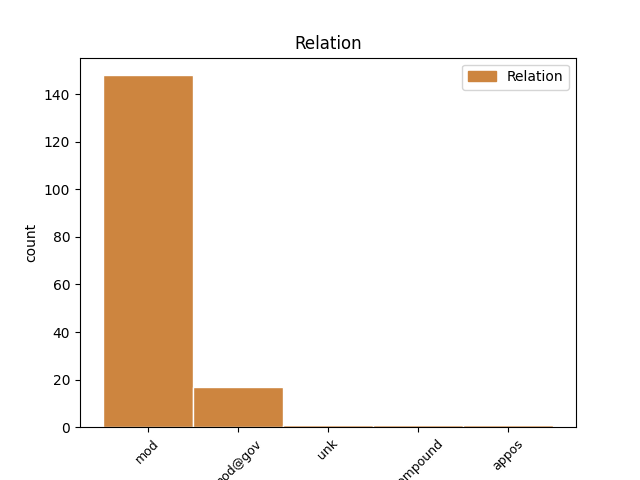
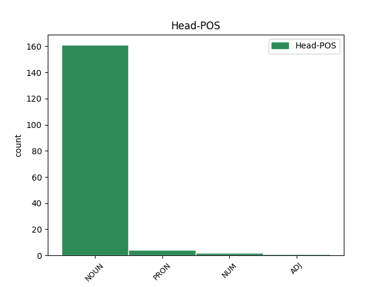
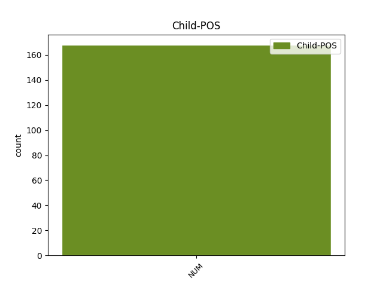

Distribution of features within this leaf



Agreement Rules sorted by frequency.
- When the dependent token is the modifer(mod) of the head token, and the head token is NOUN and the dependent token is NUM.
1 11 _ _ _ _ 0 _ _ _
2 . _ _ _ _ 0 _ _ _
3 Komiteto _ _ _ _ 0 _ _ _
4 pirmininkas _ _ _ _ 0 _ _ _
5 arba _ _ _ _ 0 _ _ _
6 , _ _ _ _ 0 _ _ _
7 jo _ _ _ _ 0 _ _ _
8 pavedimu _ _ _ _ 0 _ _ _
9 , _ _ _ _ 0 _ _ _
10 sekretorius _ _ _ _ 0 _ _ _
11 organizuoja _ _ _ _ 0 _ _ _
12 Komiteto _ _ _ _ 0 _ _ _
13 posėdžius _ _ _ _ 0 _ _ _
14 ir _ _ _ _ 0 _ _ _
15 apie _ _ _ _ 0 _ _ _
16 tai _ _ _ _ 0 _ _ _
17 ne _ _ _ _ 0 _ _ _
18 vėliau _ _ _ _ 0 _ _ _
19 kaip _ _ _ _ 0 _ _ _
20 prieš _ _ _ _ 0 _ _ _
21 tris trys NUM sktv.raid.kiek.mot.G. Case=Acc|Gender=Fem|NumForm=Word|NumType=Card 23 mod _ _
22 darbo _ _ _ _ 0 _ _ _
23 dienas diena NOUN dkt.mot.dgs.G. Case=Acc|Gender=Fem|Number=Plur 0 _ _ _
24 praneša _ _ _ _ 0 _ _ _
25 visiems _ _ _ _ 0 _ _ _
26 Komiteto _ _ _ _ 0 _ _ _
27 nariams _ _ _ _ 0 _ _ _
28 ir _ _ _ _ 0 _ _ _
29 kitiems _ _ _ _ 0 _ _ _
30 posėdžių _ _ _ _ 0 _ _ _
31 dalyviams _ _ _ _ 0 _ _ _
32 , _ _ _ _ 0 _ _ _
33 paskelbdamas _ _ _ _ 0 _ _ _
34 darbotvarkes _ _ _ _ 0 _ _ _
35 ir _ _ _ _ 0 _ _ _
36 pateikdamas _ _ _ _ 0 _ _ _
37 numatomus _ _ _ _ 0 _ _ _
38 nagrinėti _ _ _ _ 0 _ _ _
39 dokumentus _ _ _ _ 0 _ _ _
40 . _ _ _ _ 0 _ _ _
1 Per _ _ _ _ 0 _ _ _
2 2006 _ _ _ _ 0 _ _ _
3 m _ _ _ _ 0 _ _ _
4 . _ _ _ _ 0 _ _ _
5 buvo _ _ _ _ 0 _ _ _
6 gauti _ _ _ _ 0 _ _ _
7 ir _ _ _ _ 0 _ _ _
8 patenkinti _ _ _ _ 0 _ _ _
9 du _ _ _ _ 0 _ _ _
10 duomenų _ _ _ _ 0 _ _ _
11 subjektų _ _ _ _ 0 _ _ _
12 prašymai _ _ _ _ 0 _ _ _
13 surinkti _ _ _ _ 0 _ _ _
14 jų _ _ _ _ 0 _ _ _
15 asmens _ _ _ _ 0 _ _ _
16 duomenis _ _ _ _ 0 _ _ _
17 ar _ _ _ _ 0 _ _ _
18 informaciją _ _ _ _ 0 _ _ _
19 apie _ _ _ _ 0 _ _ _
20 jų _ _ _ _ 0 _ _ _
21 asmens _ _ _ _ 0 _ _ _
22 duomenų _ _ _ _ 0 _ _ _
23 tvarkymą _ _ _ _ 0 _ _ _
24 iš _ _ _ _ 0 _ _ _
25 dvylikos dvylika NUM sktv.raid.kiek.K. Case=Gen|NumForm=Word|NumType=Card 28 mod@gov _ _
26 registruotų _ _ _ _ 0 _ _ _
27 duomenų _ _ _ _ 0 _ _ _
28 valdytojų valdytojas NOUN dkt.vyr.dgs.K. Case=Gen|Gender=Masc|Number=Plur 0 _ _ _
29 . _ _ _ _ 0 _ _ _
1 Nors _ _ _ _ 0 _ _ _
2 kaltinti _ _ _ _ 0 _ _ _
3 , _ _ _ _ 0 _ _ _
4 kad _ _ _ _ 0 _ _ _
5 kelių keli PRON įv.vyr.K. Case=Gen|Definite=Ind|Gender=Masc|PronType=Ind 0 _ _ _
6 šimtų šimtas NUM sktv.raid.kiek.vyr.dgs.K. Case=Gen|Gender=Masc|Number=Plur|NumForm=Word|NumType=Card 5 mod@gov _ _
7 vienaip _ _ _ _ 0 _ _ _
8 ar _ _ _ _ 0 _ _ _
9 kitaip _ _ _ _ 0 _ _ _
10 su _ _ _ _ 0 _ _ _
11 Sąjūdžio _ _ _ _ 0 _ _ _
12 veiklos _ _ _ _ 0 _ _ _
13 laikotarpiu _ _ _ _ 0 _ _ _
14 susijusių _ _ _ _ 0 _ _ _
15 tekstų _ _ _ _ 0 _ _ _
16 jūroje _ _ _ _ 0 _ _ _
17 nebuvo _ _ _ _ 0 _ _ _
18 panaudota _ _ _ _ 0 _ _ _
19 nė _ _ _ _ 0 _ _ _
20 viena _ _ _ _ 0 _ _ _
21 knyga _ _ _ _ 0 _ _ _
22 , _ _ _ _ 0 _ _ _
23 būtų _ _ _ _ 0 _ _ _
24 nekorektiška _ _ _ _ 0 _ _ _
25 , _ _ _ _ 0 _ _ _
26 tačiau _ _ _ _ 0 _ _ _
27 keli _ _ _ _ 0 _ _ _
28 trūkumai _ _ _ _ 0 _ _ _
29 tiesiog _ _ _ _ 0 _ _ _
30 krinta _ _ _ _ 0 _ _ _
31 į _ _ _ _ 0 _ _ _
32 akis _ _ _ _ 0 _ _ _
33 . _ _ _ _ 0 _ _ _
1 Šiuo _ _ _ _ 0 _ _ _
2 metu _ _ _ _ 0 _ _ _
3 ES _ _ _ _ 0 _ _ _
4 rinkoje _ _ _ _ 0 _ _ _
5 cirkuliuoja _ _ _ _ 0 _ _ _
6 trys trys NUM sktv.raid.kiek.mot.V. Case=Nom|Gender=Fem|NumForm=Word|NumType=Card 7 compound _ _
7 dešimtys dešimt NUM sktv.raid.kiek.mot.dgs.V. Case=Nom|Gender=Fem|Number=Plur|NumForm=Word|NumType=Card 0 _ _ _
8 GMO _ _ _ _ 0 _ _ _
9 produktų _ _ _ _ 0 _ _ _
10 . _ _ _ _ 0 _ _ _
1 Pirmuose pirmas NUM sktv.raid.kelint.vyr.dgs.Vt. Case=Loc|Definite=Ind|Gender=Masc|Number=Plur|NumForm=Word|NumType=Ord 2 mod _ _
2 dviejuose du NUM sktv.raid.kiek.vyr.Vt. Case=Loc|Gender=Masc|NumForm=Word|NumType=Card 0 _ _ _
3 , _ _ _ _ 0 _ _ _
4 panaudojus _ _ _ _ 0 _ _ _
5 aiškinamosios _ _ _ _ 0 _ _ _
6 faktorinės _ _ _ _ 0 _ _ _
7 analizės _ _ _ _ 0 _ _ _
8 matematinį _ _ _ _ 0 _ _ _
9 modelį _ _ _ _ 0 _ _ _
10 , _ _ _ _ 0 _ _ _
11 pradinis _ _ _ _ 0 _ _ _
12 teiginių _ _ _ _ 0 _ _ _
13 skaičius _ _ _ _ 0 _ _ _
14 - _ _ _ _ 0 _ _ _
15 167 _ _ _ _ 0 _ _ _
16 buvo _ _ _ _ 0 _ _ _
17 sumažintas _ _ _ _ 0 _ _ _
18 iki _ _ _ _ 0 _ _ _
19 24 _ _ _ _ 0 _ _ _
20 , _ _ _ _ 0 _ _ _
21 jie _ _ _ _ 0 _ _ _
22 priskirti _ _ _ _ 0 _ _ _
23 keturiems _ _ _ _ 0 _ _ _
24 faktoriams _ _ _ _ 0 _ _ _
25 : _ _ _ _ 0 _ _ _
26 socialinės _ _ _ _ 0 _ _ _
27 paramos _ _ _ _ 0 _ _ _
28 , _ _ _ _ 0 _ _ _
29 problemų _ _ _ _ 0 _ _ _
30 sprendimo _ _ _ _ 0 _ _ _
31 , _ _ _ _ 0 _ _ _
32 emocinės _ _ _ _ 0 _ _ _
33 iškrovos _ _ _ _ 0 _ _ _
34 ir _ _ _ _ 0 _ _ _
35 vengimo _ _ _ _ 0 _ _ _
36 . _ _ _ _ 0 _ _ _
1 Nežinau _ _ _ _ 0 _ _ _
2 , _ _ _ _ 0 _ _ _
3 kaip _ _ _ _ 0 _ _ _
4 įjungti _ _ _ _ 0 _ _ _
5 arba _ _ _ _ 0 _ _ _
6 išjungti _ _ _ _ 0 _ _ _
7 Dievą _ _ _ _ 0 _ _ _
8 , _ _ _ _ 0 _ _ _
9 jis _ _ _ _ 0 _ _ _
10 man _ _ _ _ 0 _ _ _
11 taip _ _ _ _ 0 _ _ _
12 ir _ _ _ _ 0 _ _ _
13 liko _ _ _ _ 0 _ _ _
14 tarp _ _ _ _ 0 _ _ _
15 daikto _ _ _ _ 0 _ _ _
16 ir _ _ _ _ 0 _ _ _
17 reiškinio _ _ _ _ 0 _ _ _
18 , _ _ _ _ 0 _ _ _
19 nors _ _ _ _ 0 _ _ _
20 abu abu NUM sktv.raid.kiek.vyr.V. Case=Nom|Gender=Masc|NumForm=Word|NumType=Card 21 mod _ _
21 jie jis PRON įv.vyr.dgs.V. Case=Nom|Definite=Ind|Gender=Masc|Number=Plur|Person=3|PronType=Prs 0 _ _ _
22 svarbūs _ _ _ _ 0 _ _ _
23 . _ _ _ _ 0 _ _ _
Disagree Examples:
1 Vienose _ _ _ _ 0 _ _ _
2 dirba _ _ _ _ 0 _ _ _
3 tūkstančiai tūkstantis NUM sktv.raid.kiek.vyr.dgs.V. Case=Nom|Gender=Masc|Number=Plur|NumForm=Word|NumType=Card 4 mod@gov _ _
4 žmonių žmogus NOUN dkt.vyr.dgs.K. Case=Gen|Gender=Masc|Number=Plur 0 _ _ _
5 , _ _ _ _ 0 _ _ _
6 kitose _ _ _ _ 0 _ _ _
7 - _ _ _ _ 0 _ _ _
8 šimtai _ _ _ _ 0 _ _ _
9 , _ _ _ _ 0 _ _ _
10 dar _ _ _ _ 0 _ _ _
11 kitose _ _ _ _ 0 _ _ _
12 - _ _ _ _ 0 _ _ _
13 vos _ _ _ _ 0 _ _ _
14 dešimt _ _ _ _ 0 _ _ _
15 . _ _ _ _ 0 _ _ _
1 Vienose _ _ _ _ 0 _ _ _
2 dirba _ _ _ _ 0 _ _ _
3 tūkstančiai _ _ _ _ 0 _ _ _
4 žmonių _ _ _ _ 0 _ _ _
5 , _ _ _ _ 0 _ _ _
6 kitose kitas PRON įv.mot.dgs.Vt. Case=Loc|Definite=Ind|Gender=Fem|Number=Plur|PronType=Ind 0 _ _ _
7 - _ _ _ _ 0 _ _ _
8 šimtai šimtas NUM sktv.raid.kiek.vyr.dgs.V. Case=Nom|Gender=Masc|Number=Plur|NumForm=Word|NumType=Card 6 appos _ SpaceAfter=No
9 , _ _ _ _ 0 _ _ _
10 dar _ _ _ _ 0 _ _ _
11 kitose _ _ _ _ 0 _ _ _
12 - _ _ _ _ 0 _ _ _
13 vos _ _ _ _ 0 _ _ _
14 dešimt _ _ _ _ 0 _ _ _
15 . _ _ _ _ 0 _ _ _
1 Galimybe _ _ _ _ 0 _ _ _
2 pasivaikščioti _ _ _ _ 0 _ _ _
3 po _ _ _ _ 0 _ _ _
4 retai _ _ _ _ 0 _ _ _
5 duris _ _ _ _ 0 _ _ _
6 atveriančią _ _ _ _ 0 _ _ _
7 Švč _ _ _ _ 0 _ _ _
8 . _ _ _ _ 0 _ _ _
9 Trejybės _ _ _ _ 0 _ _ _
10 graikų _ _ _ _ 0 _ _ _
11 apeigų _ _ _ _ 0 _ _ _
12 katalikų _ _ _ _ 0 _ _ _
13 bažnyčią _ _ _ _ 0 _ _ _
14 susigundė _ _ _ _ 0 _ _ _
15 keli _ _ _ _ 0 _ _ _
16 šimtai šimtas NUM sktv.raid.kiek.vyr.dgs.V. Case=Nom|Gender=Masc|Number=Plur|NumForm=Word|NumType=Card 18 mod@gov _ _
17 istorijos _ _ _ _ 0 _ _ _
18 mėgėjų mėgėjas NOUN dkt.vyr.dgs.K. Case=Gen|Gender=Masc|Number=Plur 0 _ _ _
19 . _ _ _ _ 0 _ _ _
1 Kiek _ _ _ _ 0 _ _ _
2 tai _ _ _ _ 0 _ _ _
3 pavyksta _ _ _ _ 0 _ _ _
4 recenzentui _ _ _ _ 0 _ _ _
5 , _ _ _ _ 0 _ _ _
6 kadangi _ _ _ _ 0 _ _ _
7 jis _ _ _ _ 0 _ _ _
8 nėra _ _ _ _ 0 _ _ _
9 makroanalizės _ _ _ _ 0 _ _ _
10 žinovas _ _ _ _ 0 _ _ _
11 , _ _ _ _ 0 _ _ _
12 sunku _ _ _ _ 0 _ _ _
13 spręsti _ _ _ _ 0 _ _ _
14 , _ _ _ _ 0 _ _ _
15 tačiau _ _ _ _ 0 _ _ _
16 bet _ _ _ _ 0 _ _ _
17 kuriuo _ _ _ _ 0 _ _ _
18 atveju _ _ _ _ 0 _ _ _
19 imponuoja _ _ _ _ 0 _ _ _
20 kiekybinių _ _ _ _ 0 _ _ _
21 duomenų _ _ _ _ 0 _ _ _
22 gausa _ _ _ _ 0 _ _ _
23 , _ _ _ _ 0 _ _ _
24 nes _ _ _ _ 0 _ _ _
25 atliktos _ _ _ _ 0 _ _ _
26 dvi du NUM sktv.raid.kiek.mot.G. Case=Acc|Gender=Fem|NumForm=Word|NumType=Card 28 mod _ _
27 reprezentatyvios _ _ _ _ 0 _ _ _
28 apklausos apklausa NOUN dkt.mot.dgs.V. Case=Nom|Gender=Fem|Number=Plur 0 _ _ _
29 , _ _ _ _ 0 _ _ _
30 o _ _ _ _ 0 _ _ _
31 tai _ _ _ _ 0 _ _ _
32 puikiai _ _ _ _ 0 _ _ _
33 pasitarnavo _ _ _ _ 0 _ _ _
34 renkant _ _ _ _ 0 _ _ _
35 duomenis _ _ _ _ 0 _ _ _
36 apie _ _ _ _ 0 _ _ _
37 grįžusiųjų _ _ _ _ 0 _ _ _
38 demografines _ _ _ _ 0 _ _ _
39 charakteristikas _ _ _ _ 0 _ _ _
40 ir _ _ _ _ 0 _ _ _
41 gyventojų _ _ _ _ 0 _ _ _
42 nuostatas _ _ _ _ 0 _ _ _
43 dėl _ _ _ _ 0 _ _ _
44 emigracijos _ _ _ _ 0 _ _ _
45 . _ _ _ _ 0 _ _ _
1 Šiuo _ _ _ _ 0 _ _ _
2 metu _ _ _ _ 0 _ _ _
3 ES _ _ _ _ 0 _ _ _
4 rinkoje _ _ _ _ 0 _ _ _
5 cirkuliuoja _ _ _ _ 0 _ _ _
6 trys _ _ _ _ 0 _ _ _
7 dešimtys dešimt NUM sktv.raid.kiek.mot.dgs.V. Case=Nom|Gender=Fem|Number=Plur|NumForm=Word|NumType=Card 9 mod@gov _ _
8 GMO _ _ _ _ 0 _ _ _
9 produktų produktas NOUN dkt.vyr.dgs.K. Case=Gen|Gender=Masc|Number=Plur 0 _ _ _
10 . _ _ _ _ 0 _ _ _